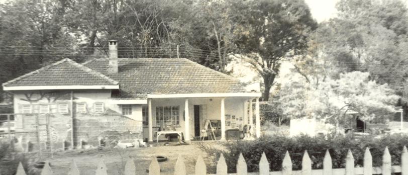

 Rusinga School was founded in 1975 by a group of expatriates and local Christians. The vision, interest and commitment of founder members was a school providing high quality education based on a firm Christian foundation.
The name ‘Rusinga’ was derived from Rusinga Island in Lake Victoria, where one of the founder couple had taught in local schools as part of their Christian service. The founder members decided to adopt the name ‘Rusinga’ to reflect its local identity, uniqueness and a legacy of Christian service.
After establishing Rusinga Kindergarten, parents expressed their keen interest and commitment to having their children continue with Primary education based on Christian foundation.This strong partnership led to the establishment of the Secondary School and eventually, A-Level.
Rusinga School progressively became a Christian international co-educational day school following British National Curriculum (BNC). The Christian foundation of the school has been jealously guarded and maintained since its inception.
School Anthem
LORD, we come to You today Giving thanks as we pray. That You would bless us In all we do. For we seek to honor You in our work and in our play. Come shepherd us as we walk Your way.
To know You is to love You, to love You is to serve You, to serve You is to live for You every single day. To live for You is to please You It’s a matter of the heart To fear God is wisdom: That’s where it starts.
For more info about us
rusingaschools@gmail.com rusingaschool@yahoo.com +254789043253 +254709764523 P.O. Box 25088-00603, Lavington, Nairobi. We are located opposite Braeburn school
 Rusinga Schools
Rusinga Schools